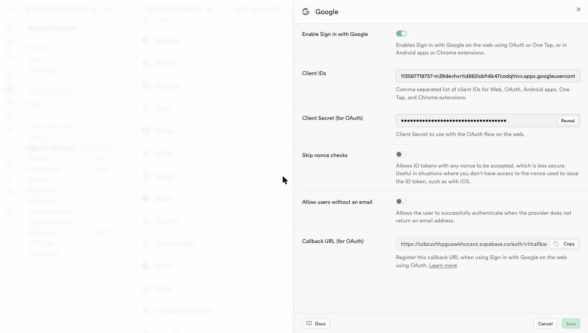
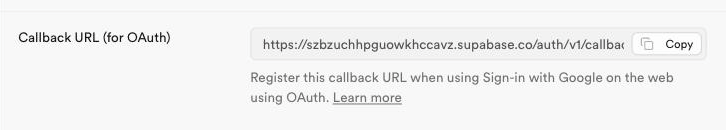
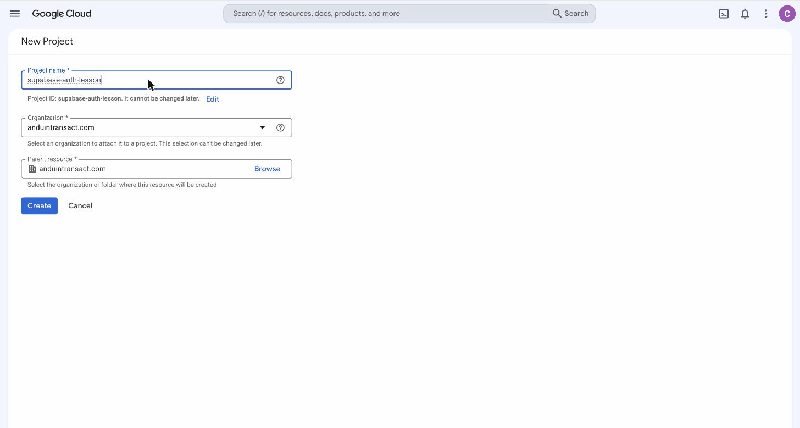
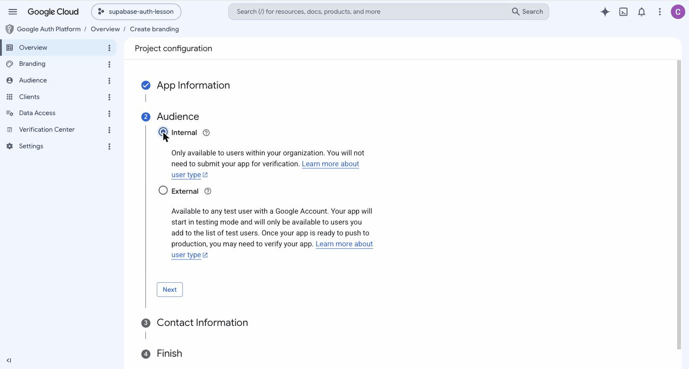
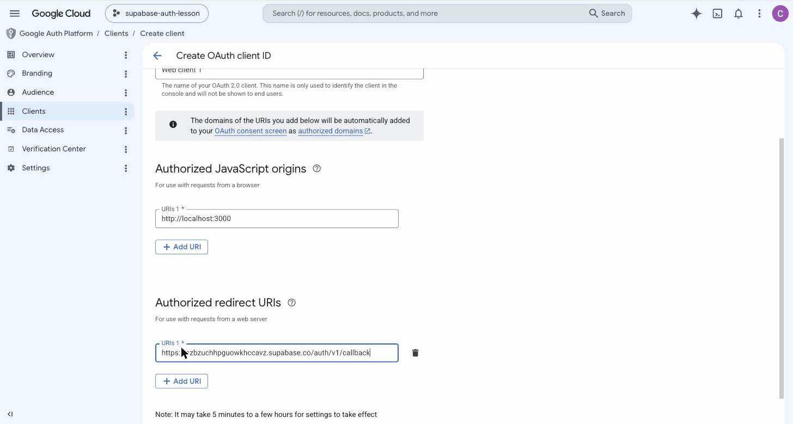
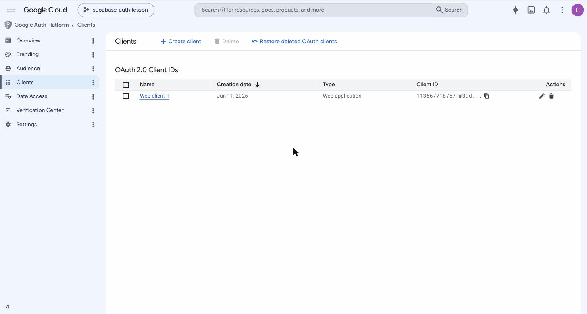
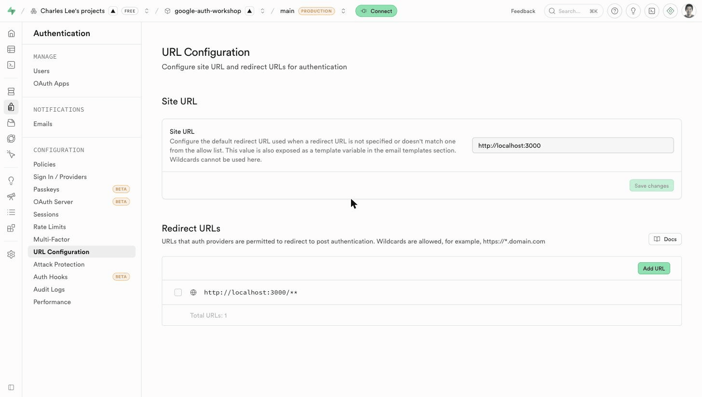

Fast Track
Fast Track
Sign in with Google.
Until now, your apps treated every visitor the same.
Today they learn who's using them — with one button, no passwords, Anduin-only.
Fast TrackYour apps can't tell people apart.
- Anyone with the link walks straight in. Your app, your data — open to whoever finds the URL.
- Everyone sees the same everything. One shared pile of data for all visitors.
- There is no “me.” “My tasks” or “my drafts” can't exist when every visitor is the same anonymous stranger.
- People sign in with the Google account they already have.
- The app knows who's using it — and can treat each person differently.
- Outsiders are turned away at the door — only Anduin accounts get in.
Fast TrackAuthentication is how an app learns — and can trust — who's using it.
Every private or personal thing software does is built on that one answer.
Things can be yours.
Your tasks, your drafts, your settings — data tied to your account, invisible to everyone else.
Rules about who sees what.
Once the app knows who you are, it can decide what you may see and do. That's the foundation for everything we build next.
Actions have names on them.
Who created this? Who changed that? With real users, the app can answer.
Fast TrackWe could build our own username-and-password system.
Almost nobody should.
Passwords are a security job.
Storing them safely, resets, phishing, breaches — get one detail wrong and you've leaked everyone's password.
Google already solved it.
World-class security, two-factor, breach detection — and every Anduin person already has the account.
It can lock to Anduin.
One setting tells Google to refuse anyone outside anduintransact.com — before they ever reach your app.
Fast TrackHow the sign-in dance works.
Your app hands the user to Google, Google verifies them, and Supabase turns the answer into a session. Your app never sees a password.
localhost:3000
User clicks the “Sign in with Google” button.
Account chooser
Verifies the user — and that they're in anduintransact.com.
/auth/v1/callback
Exchanges Google's one-time code for a session and a user row.
Signed in
Session + real user. auth.uid() now works.
Fast TrackFive values that must match.
Everything you'll do today is connecting these five. When something breaks, it's almost always one of them not matching.
| Piece | Lives in | What it's for |
|---|---|---|
| User type | Internal = only your Workspace can sign in. This is the lever that locks the app to Anduin. | |
| Callback URL | Supabase | Where Google sends the user back: https://<ref>.supabase.co/auth/v1/callback |
| Client ID | Google → Supabase | Public identifier for your app. Fine to be seen. |
| Client Secret | Google → Supabase | Private proof the request is really from your app. Shown once. |
| Redirect URI | Allow-list of return addresses. Must contain the callback URL byte-for-byte. |
Fast TrackThe route: four short modules.
Mostly clicking through two dashboards. The code at the end is one line.
Get the callback URL
Enable the Google provider, copy the address Google will return to.
Create the credentials
Project under the org, consent screen set to Internal, one OAuth client.
Connect them
Paste the Client ID + Secret back in, set your app's URLs.
Trigger & verify
One line of code, then prove the lock actually works.
Fast TrackEnable Google. Copy the callback.


Supabase → Authentication → Sign In / Providers → Google
Fast TrackCreate a project — under the org.
supabase-auth-lesson.
New Project — Organization & Parent: anduintransact.com
Fast TrackSet the audience to Internal.
The consent screen wizard has four short parts. This radio button is the whole org restriction — everything else is filling in names and emails.

Audience → Internal. External is for public apps — not today.
Fast TrackCreate the OAuth client.
http://localhost:3000 — where your app runs.
Redirect URI = the Supabase callback URL, pasted
Fast TrackCopy both credentials.

Clients → Web client 1, with its Client ID
Fast TrackPaste them into Supabase.
http://localhost:3000.http://localhost:3000/**./dashboard, not just the front door.
Supabase → Authentication → URL Configuration
Fast TrackThen: one line of code.
await supabase.auth.signInWithOAuth({ provider: 'google', options: { redirectTo: window.location.origin, queryParams: { hd: 'anduintransact.com' }, }, })
hd just filters the account chooser to Anduin accounts. It's a courtesy, not the lock.Fast TrackVerify it works.
auth.getUser() returns them.Now try a personal Gmail.
Google blocks it with an authorization error before it ever reaches your app. That error is not a bug — it's the whole point of today. If an outsider gets through, something's wrong.
Fast TrackWhen it breaks: check the match.
Every error below is one of the five values not matching. The symptom points straight at which one.
| What you see | Which value | Fix |
|---|---|---|
| redirect_uri_mismatch | Redirect URI | Re-copy the callback from Supabase, re-paste into Google. Watch for a trailing slash. |
| “Internal” isn't offered | User type | Your GCP project isn't under the org — wrong Google account. Recreate it signed in with work. |
| invalid client / secret | Client ID + Secret | Re-paste both into Supabase. Lost the secret? Generate a new one in Google. |
| signs in, bounces to wrong page | Supabase URLs | Set Site URL and add http://localhost:3000/** in URL Configuration. |
Fast TrackYour apps now have
real users.
Google does the checking. Supabase does the bookkeeping. Your app just asks “who is this?” — and what each user can see and do is something you control. That was the last missing piece: you're ready to build.